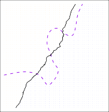

| < 2.2.2 The Bias-Variance Trade-Off | 2.2.3.1 K Nearest Neighbors > |
💡 학습 팁: 조금 더 쉽고 재미있게 공부하고 싶으신가요? 이 페이지는 중학생도 이해할 수 있는 친절한 ‘쉬운 해설판’입니다! 영어 원문을 문장 단위로 꼼꼼하게 번역한 느낌을 원하신다면 📖 직역본 보기 메뉴를 활용하세요!
2.2.3 The Classification Setting_
2.2.3 분류 설정_ (O/X 퀴즈의 세계)
Thus far, our discussion of model accuracy has been focused on the regression setting. 지금까지, 우리가 피 튀기게 떠들었던 “내 기계 채점(모형 정확도)” 이야기는 오직 숫자를 맞추는 ‘회귀’ 동네에서만 일어나는 일이었습니다.
But many of the concepts that we have encountered, such as the bias-variance trade-off, transfer over to the classification setting with only some modifications due to the fact that $y_i$ is no longer quantitative. 하지만 기쁘게도! 방금 피 터지게 배웠던 그 끔찍한 ‘편향-분산 트레이드오프’ 같은 거의 모든 개념들은, 이제 치러야 할 정답($y_i$)이 더 이상 숫자가 아니라 “개냐 고양이냐”하는 팀 고르기(질적)로 바뀌었다는 사실 딱 하나만 빼면, O/X 퀴즈(분류) 동네로 그대로 고스란히 이사 올 수 있습니다.
Suppose that we seek to estimate $f$ on the basis of training observations ${(x_1, y_1), \dots , (x_n, y_n)}$, where now $y_1, \dots , y_n$ are qualitative. 자, এবার(이제) 우리가 혈액형이나 암 진단명($y_1, \dots , y_n$ 이 질적인) 같은 훈련용 오답 노트를 한 움큼 쥐고 신의 정답($f$)을 기계로 때려 맞추려(추정) 고민한다고 쳐봅시다.
The most common approach for quantifying the accuracy of our estimate $\hat{f}$ is the training error rate , the proportion of mistakes that are made if we apply our estimate $\hat{f}$ to the training observations: 우리 기계 $\hat{f}$ 가 얼마나 똑똑한지 점수를 매기는 가장 무식하고 전 세계적인 잣대는 바로 ‘훈련 오차율(training error rate)’ 입니다. 이건 단순히 우리 기계한테 모의고사(훈련 데이터)를 다 풀게 시킨 다음에, 기계가 빨간 펜으로 쫙쫙 비가 내리도록 “얼마나 많이 틀렸나?” 그 빙구짓의 비율을 계산한 수치입니다.
\[\frac{1}{n} \sum_{i=1}^n I(y_i \neq \hat{y}_i) \tag{2.8}\]Here $\hat{y}_i$ is the predicted class label for the $i$th observation using $\hat{f}$. 수식을 뜯어보죠. $\hat{y}_i$ 는 기계 $\hat{f}$ 가 “저는 1번 아저씨가 암 환자(1)라고 찍겠습니다!” 하고 당당하게 뱉은 오답 또는 정답(예측 라벨)입니다.
And $I(y_i \neq \hat{y}i)$ is an _indicator variable that equals 1 if $y_i \neq \hat{y}_i$ and zero if $y_i = \hat{y}_i$. 그 앞에 붙은 $I$ 라는 기괴한 함수는 채점관 역할을 하는 ‘지시 변수(indicator variable)’ 인데요. 진짜 정답이랑 기계가 찍은 답이 서로 엇갈려서 땡! 틀리면 얄짤없이 벌점 “1” 점을 때리고, 용케 둘이 똑같아서 딩동댕 맞추면 “0” 점을 주는 무자비한 로봇 채점관입니다.
If $I(y_i \neq \hat{y}_i) = 0$ then the $i$th observation was classified correctly by our classification method; otherwise it was misclassified. 그러니까 로봇 심판이 “0점($I = 0$)”이라고 외치면 기계가 그 사람 정답을 올바르게 구별(분류)해 낸 자랑스러운 상황이고, 만약 “1점($I = 1$)”이라 외치면 기계가 오답을 찍고 장렬히 오분류 사망했다는 뜻입니다.
Hence Equation 2.8 computes the fraction of incorrect classifications. 그러므로 식 2.8 전체를 돌려보면, $n$ 명의 전체 아저씨들 중에서 기계가 도대체 몇 명이나 헛발질(오분류)을 했는지 그 처참한 ‘오답률’ 비율이 떡하니 계산되어 나옵니다.
Equation 2.8 is referred to as the training error rate because it is computed based on the data that was used to train our classifier. 근데 잊지 마세요. 식 2.8은 단순히 훈련 때 썼던 모의고사 오답 노트를 가지고 재탕해서 채점한 구라 점수이기 때문에, 우린 이걸 꼬리표를 달아 ‘훈련 오차율(Training error rate)’ 이라고 부릅니다.
As in the regression setting, we are most interested in the error rates that result from applying our classifier to test observations that were not used in training. 앞서 수능 점수(회귀 셋팅)에서 누누이 잔소리했듯이, 사장님들은 기계가 외워버린 연습 모의고사(훈련) 성적 따위엔 1도 관심 없습니다! 오직 단 한 번도 본 적 없는 철통 보완의 새로운 수능 문제지(시험 관측치)를 풀었을 때 쏟아지는 극강의 실전 헛발질 비율(오차율)에만 피 눈물 흘리며 관심을 쏟죠!
The test error rate associated with a set of test observations of the form $(x_0, y_0)$ is given by 그 피 말리는 낯선 수능 문제지 집합($x_0, y_0$)을 쥐락펴락하는 진짜 실전 성적표, ‘시험 오차율(Test error rate)’ 은 이렇게 주어집니다.
\[\text{Ave}(I(y_0 \neq \hat{y}_0)) \tag{2.9}\]where $\hat{y}_0$ is the predicted class label that results from applying the classifier to the test observation with predictor $x_0$. 수식은 비슷합니다. $\hat{y}_0$ 부분에 애초에 한 번도 본 적 없는 낯선 시험 힌트 $x_0$ 를 기계 놈한테 집어넣고 토해낸 ‘새로운 예측 라벨’을 넣고 얄짤없이 다시 채점을 때려 평균(Ave)을 낸 거죠.
A good classifier is one for which the test error (2.9) is smallest. 고로 이 험난한 팀플 퀴즈 세계에서 일명 우주 최고 등급(good) 평가를 받는 식별기 기계란, 당근빳따 저 실전 수능 오답률 (2.9) 점수를 0점에 수렴하게 깎아버리는 무결점 천재 기계뿐입니다.
The Bayes Classifier
베이즈 분류기 (오답 방어율의 신)
It is possible to show (though the proof is outside of the scope of this book) that the test error rate given in (2.9) is minimized, on average, by a very simple classifier that assigns each observation to the most likely class, given its predictor values . 이 책이 증명 따윈 몰라라 하며 그냥 맹신을 강요하겠지만, 아까 본 저 수능 시험 오답률 (2.9)은 놀랍게도 다음과 같은 미치도록 단순한 행동을 하는 심플 기계에 의해서 무조건 평균적으로 최저치를 찍게(오답 최소화) 됩니다: “야! 눈에 보이는 힌트를 딱 보고 확률로 계산해서 가장 승률이 높은 팀으로 사람들을 그냥 몰빵 시켜버려!”
In other words, we should simply assign a test observation with predictor vector $x_0$ to the class $j$ for which 쉽게 말해서 고민할 필요 1도 없이, 어떤 새로운 사람 힌트($x_0$)가 병원 문을 열고 들어왔을 때 아래의 ‘마법의 수식’ 확률이 가장 땡땡하게 솟아오르는 $j$ 라는 팀에다가 그 사람 목덜미를 잡고 냅다 강제 할당해 버리라는 겁니다.
\[Pr(Y = j|X = x_0) \tag{2.10}\]Note that (2.10) is a conditional probability : it is the probability that $Y = j$, given the observed predictor vector $x_0$. 쫄지 마세요! 저 (2.10)은 그냥 흔해 빠진 ‘조건부 확률(Conditional probability)’ 입니다. 쉽게 말해 “사장님! 방금 들어온 저 호구 표정($X = x_0$ 힌트)을 보아하니 이번 판에 주머니를 털릴 특정 $j$ 팀($Y=j$)일 확률은 70%입니다!” 하는 그 계산 확률 말이죠.
This very simple classifier is called the Bayes classifier . 오로지 이 가장 단순하고 확률 높은 쪽에 무식하게 패를 다 걸어버리는 타짜 같은 기계를, 있어 보이게 ‘베이즈 분류기(Bayes classifier)’ 라고 부릅니다.
In a two-class problem where there are only two possible response values, say class 1 or class 2 , the Bayes classifier corresponds to predicting class one if $Pr(Y = 1 | X = x_0) > 0.5$, and class two otherwise. 극단적으로 개냐, 고양이냐 (클래스 1 or 2) 딱 정답이 두 개뿐인 쫄깃한 이지선다 퀴즈 쇼에서, 베이즈 분류기 놈은 속으로 “어? 개일 확률이 50.001%가 넘었네($>0.5$)?” 싶으면 뒤도 안 돌아보고 “정답! 1번 개!”를 외치고, 그게 아니면 단 1초도 고민 않고 무조건 “2번 고양이!”를 질러버리는 냉혈한 시스템입니다.
Figure 2.13 provides an example using a simulated data set in a two-dimensional space consisting of predictors $X_1$ and $X_2$. 그림 2.13은 가로 힌트($X_1$)랑 세로 힌트($X_2$) 딱 두 개만 던져주고 조물주가 조작해서 판을 짠 2차원 시뮬레이션 게임판을 보여줍니다.
The orange and blue circles correspond to training observations that belong to two different classes. 판때기 위에 구워진 귤(주황색 원)들과 블루베리(파란색 원)들은 서로 앙숙인 파벌(클래스)에 속한 불쌍한 모의고사(훈련 관측치) 애들입니다.
For each value of $X_1$ and $X_2$, there is a different probability of the response being orange or blue. 게임판의 모든 바닥(좌표)마다 “여기에 발을 디디면 귤 편이 될까, 블루베리 편이 될까?” 하는 눈에 안 보이는 확률표가 지뢰 찾기처럼 다 다르게 깔려있습니다.
Since this is simulated data, we know how the data were generated and we can calculate the conditional probabilities for each value of $X_1$ and $X_2$. 다행인지 불행인지 우린 조물주(시뮬레이션 개발자)라서 이 세상의 소스코드를 다루기 때문에, 모든 $X_1, X_2$ 바닥 타일마다 “여기 귤 확률 몇 퍼센트임?” 하는 정답 확률(조건부 확률)을 모조리 다 꿰뚫어 계산해 낼 수 있는 전지전능한 상태입니다.
The orange shaded region reflects the set of points for which $Pr(Y = \text{orange} | X)$ is greater than 50 %, while the blue shaded region indicates the set of points for which the probability is below 50 %. 조물주인 우리가 밑장 빼기로 도화지에 색칠을 좀 해봤습니다. 주황색으로 배경을 시뻘겋게 칠한 구역은 밟기만 하면 귤로 변할 확률이 50%를 부쩍 후려 넘기는 무시무시한(greater than 50%) ‘확률 깡패 구역’이고, 반대로 새파랗게 칠해놓은 바닥은 귤 확률이 0에 수렴하는 ‘블루베리 깡패 구역(below 50%)’을 암시합니다.
The purple dashed line represents the points where the probability is exactly 50 %. 이 두 깡패 세력이 맞붙는 한가운데를 보면, 귤이냐 블루베리냐 동전 장난질마냥 피를 말리는 확률이 무려 ‘정확히 50대50(exactly 50%)’ 으로 반갈죽이 일어나는 보라색 점선 국경 지대가 생깁니다.
This is called the Bayes decision boundary . 이 피 튀기는 38선 보라색 점선을 전문 용어로 ‘베이즈 결정 경계(Bayes decision boundary)’ 라고 폼나게 부릅니다. 천국과 지옥의 문턱이죠.
The Bayes classifier’s prediction is determined by the Bayes decision boundary; an observation that falls on the orange side of the boundary will be assigned to the orange class, and similarly an observation on the blue side of the boundary will be assigned to the blue class. 아까 등장했던 타짜 로봇(베이즈 분류기)의 뇌 구조는 오로지 저 ‘베이즈 결정 경계선’ 하나에 지배당합니다. 어떤 놈이 새롭게 국경의 ‘주황색 땅’에 1mm라도 발을 디디게 되면 “어? 50% 넘었네! 넌 귤이야!” 하고 바로 낙인을 찍어버리고, 그 반대편 파란 땅에 한 발짝이라도 넘어가는 순간 “어딜 도망가? 넌 평생 블루베리 팀 소속이야!” 라며 차갑게 분류 지시를 날리게 되죠.

FIGURE 2.13. A simulated data set consisting of 100 observations in each of two groups, indicated in blue and in orange. The purple dashed line represents the Bayes decision boundary. The orange background grid indicates the region in which a test observation will be assigned to the orange class, and the blue background grid indicates the region in which a test observation will be assigned to the blue class.
그림 2.13. 파란 파벌 100마리, 주황 파벌 100마리를 시뮬레이터로 뿌려본 전쟁터입니다. 한가운데 갈라친 보라색 점선이 바로 확률 50:50인 최후의 38선(베이즈 결정 경계)입니다. 주황색 타일이 깔린 땅에 떨어지면 넌 주황팀, 파란색 장판에 미끄러지면 넌 파란팀으로 강제 소속(할당)되는 얄짤없는 시스템을 보여줍니다.
The Bayes classifier produces the lowest possible test error rate, called the Bayes error rate. 무식하게 확률만 추종하는 이 타짜 로봇(베이즈 분류기)은 우주에 존재하는 모든 꼼수와 딥러닝 기계를 통틀어 감히 범접할 수 없는 ‘가장 낮은 극한의 실전 수능 오답률’을 찍어내는데, 우린 이 넘사벽 에러율을 신의 영역, ‘베이즈 오차율(Bayes error rate)’ 이라며 절을 하고 떠받듭니다.
Since the Bayes classifier will always choose the class for which (2.10) is largest, the error rate will be $1 - \max_j Pr(Y=j | X=x_0)$ at $X=x_0$. 타짜 로봇은 눈이 돌아가서 항상 수식 (2.10)인 ‘가능성(확률)이 가장 큰 팀’에만 전 재산을 올인하기 때문에, 이 미친놈이 도박에서 까먹을 확률(오차율)은 반대로 “100%(1)에서 자기가 배팅한 가장 확률 높은 놈($\max_j$)을 뺀 나머지 잡동사니들의 잔챙이 확률 찌꺼기”뿐입니다!
In general, the overall Bayes error rate is given by 그리하여 전 세계의 밥줄이자 우주의 진리인 이 통계상 찐 ‘베이즈 오답률(신의 에러 최소 한계)’의 아름다운 공식은 이렇게 주어집니다.
\[1 - E(\max_j Pr(Y=j|X)) \tag{2.11}\]where the expectation averages the probability over all possible values of $X$ . (여기서 붙은 기대치 $E$ 기호는, 기계가 세상의 모든 가능한 힌트 보따리($X$)를 싹 다 뒤져가며 뽑아낸 확률들을 영혼까지 끌어 모아 평균을 쳤다는 뜻입니다.)
For our simulated data, the Bayes error rate is 0.133. 조물주인 우리가 조작한 방금 그 장난감 데이터 세계에서, 우주 최고의 타짜 베이즈 기계가 찍어내는 최저 오차율의 극한 한계선은 0.133(13.3%)이라고 계산되어 나왔습니다.
It is greater than zero, because the classes overlap in the true population, which implies that $\max_j Pr(Y = j|X = x_0) < 1$ for some values of $x_0$. 어라? 신의 기계라면서 왜 깔끔하게 오차율이 0%로 안 떨어지고 0.133이나 지저분하고 억울하게 남는(0보다 큰) 걸까요? 왜냐하면 진짜 진리의 우주(모집단) 속에서는 저 빌어먹을 파란 놈들과 주황 놈들이 서로 엉켜 붙어서 국경선 근처에서 피 터지게 오버랩(중첩) 되고 있기 때문입니다! 그러니까 힌트가 아무리 기가 막혀도, 기계 입장에서는 “어? 얘 주황일 확률이 80%지만, 파란 애일 수도 20%나 있잖아!” 하며 절대 승률 100% 미만($<1$)으로 헷갈리는 재앙 구역이 세상 어딘가엔 필연적으로 존재한다는 슬픈 사실을 내포하고 있습니다.
The Bayes error rate is analogous to the irreducible error, discussed earlier. 결과는 하나입니다. 아무리 천재적인 인공지능이 와도 이 베이즈 오답률 13.3% 밑으로는 절대 뚫을 수 없습니다. 아까 회귀 동네에서 다뤘던 “절대 지울 수 없는 우주의 운빨 쓰레기 에러($\text{Var}(\epsilon)$)”와 환생 수준으로 정확하게 똑같은 피의 굴레(유사함)를 씌우고 있는 겁니다.
2.2.3.1 K-Nearest Neighbors (K-최근접 이웃)
비모수적인 분류 환경에서 이론의 실제 구현체로 가장 직관적인 알고리즘인 K-최근접 이웃(KNN) 기법을 학습합니다. K 값의 크기 변화에 따라 결정 경계(Decision Boundary)가 어떻게 바뀌며, 그 과정 속 편향-분산 트레이드오프가 나타나는지를 배웁니다.
Sub-Chapters (하위 목차)
| < 2.2.2 The Bias-Variance Trade-Off | 2.2.3.1 K Nearest Neighbors > |